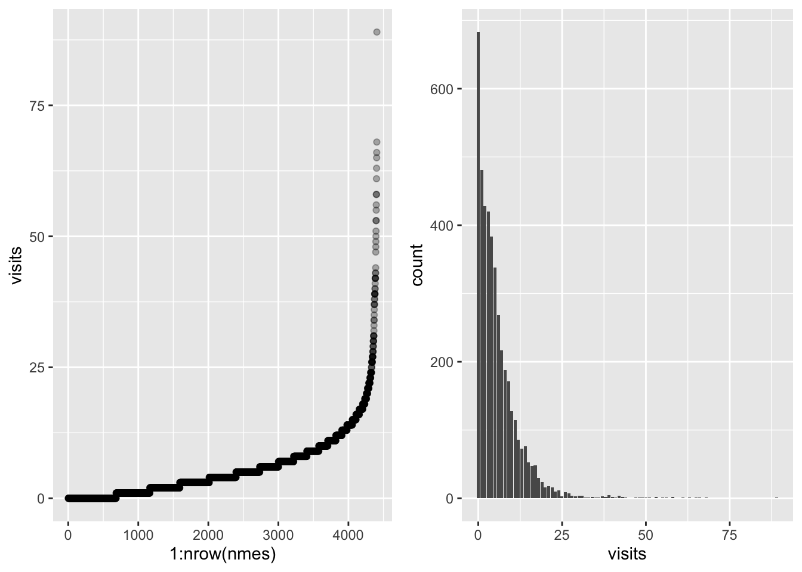
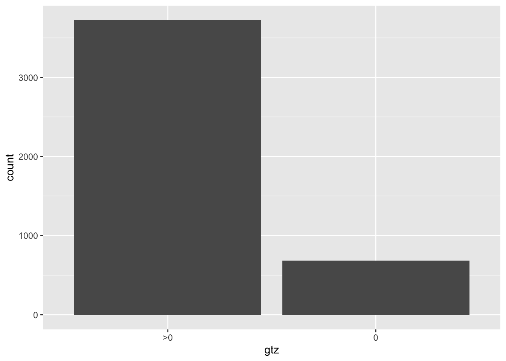

Chapter 9 Negative Binomial and Zero-Inflation
9.1 Dataset
It is a sample of 4,406 individuals, aged 66 and over, who were covered by Medicare in 1988. One of the variables the data provide is number of physician office visits. The dataset is provided by the AER package (aer?).
Our goal is to model the number of visits given the other attributes (chronic conditions, status, gender etc.). For sake of simplicity, we only select a subset of attributes which are considered to be relevant.
| variable | description |
|---|---|
| visits | Number of physician office visits (integer outcome) |
| nvisits | |
| ovisits | |
| novisits | |
| emergency | |
| hospital | Number of hospital stays (integer) |
| health | Self-perceived health status (poor, average, excellent) |
| chronic | Number of chronic condition (integer) |
| adl | |
| region | |
| age | |
| afam | |
| gender | Gender (female, male) |
| married | |
| school | Number of years of education (integer) |
| income | |
| employed | |
| insurance | Private insurance indicator (no, yes) |
| medicaid |
# load data from package
# install.package("AER")
library(AER)## Loading required package: car## Loading required package: carData##
## Attaching package: 'car'## The following object is masked from 'package:purrr':
##
## some## The following object is masked from 'package:dplyr':
##
## recode## Loading required package: lmtest## Loading required package: zoo##
## Attaching package: 'zoo'## The following objects are masked from 'package:base':
##
## as.Date, as.Date.numeric## Loading required package: sandwich## Loading required package: survivaldata("NMES1988")
nmes <- NMES1988[, c(1, 6:8, 13, 15, 18)] # select variables of interest
summary(nmes)## visits hospital health chronic
## Min. : 0.000 Min. :0.000 poor : 554 Min. :0.000
## 1st Qu.: 1.000 1st Qu.:0.000 average :3509 1st Qu.:1.000
## Median : 4.000 Median :0.000 excellent: 343 Median :1.000
## Mean : 5.774 Mean :0.296 Mean :1.542
## 3rd Qu.: 8.000 3rd Qu.:0.000 3rd Qu.:2.000
## Max. :89.000 Max. :8.000 Max. :8.000
## gender school insurance
## female:2628 Min. : 0.00 no : 985
## male :1778 1st Qu.: 8.00 yes:3421
## Median :11.00
## Mean :10.29
## 3rd Qu.:12.00
## Max. :18.00head(nmes)## visits hospital health chronic gender school insurance
## 1 5 1 average 2 male 6 yes
## 2 1 0 average 2 female 10 yes
## 3 13 3 poor 4 female 10 no
## 4 16 1 poor 2 male 3 yes
## 5 3 0 average 2 female 6 yes
## 6 17 0 poor 5 female 7 no9.2 EDA
As always, let’s start with some descriptive plots.
library(dplyr)
library(ggplot2)
library(ggpubr)
# analyse response
visits_scatter <- nmes %>%
arrange(visits) %>%
ggplot() +
geom_point(aes(1:nrow(nmes), visits), alpha = .3)
visits_bar <- nmes %>%
ggplot() +
geom_bar(aes(visits))
ggarrange(visits_scatter, visits_bar, ncol = 2)
The response presents high variability, we can reduce this by taking the log.
logvisits_scatter <- nmes %>%
mutate(visits = log(visits + .5)) %>%
arrange(visits) %>%
ggplot() +
geom_point(aes(1:nrow(nmes), visits), alpha = .3)
logvisits_bar <- nmes %>%
mutate(visits = log(visits + .5)) %>%
ggplot() +
geom_histogram(aes(visits), binwidth = .1)
ggarrange(logvisits_scatter, logvisits_bar, ncol = 2)Now we analyse the relationship with the number of chronic diseases.
# saturate
sat <- function(x, sat_point) {
x[x > sat_point] <- sat_point # saturate values above 3
lev <- as.character(0:sat_point) # define levels
lev[length(lev)] <- paste0(lev[length(lev)], "+")
x <- as.factor(x) # switch from numeric to factor
levels(x) <- lev
return(x)
}
# analyse predictor "chronic"
unbalanced_plt <- nmes %>%
ggplot() +
geom_bar(aes(chronic))
unbalanced_pltThis variable seems to have too low support on values from 4 above. This will lead to low accuracy in the visit estimation when we observe a number of chronic diseases higher than 4. We may fix this issue by assuming that a patient having 4 or more diseases will get visited as frequently as a patient with 3 chronic diseases. This means that we set a saturation point at 3 and we transform the data accordingly.
balanced_plt <- nmes %>%
mutate(chronic_sat = sat(chronic, 3)) %>%
ggplot() +
geom_bar(aes(chronic_sat))
ggarrange(unbalanced_plt, balanced_plt)To summarize, here the two data transformations discussed so far (which we can compare to the
original dataset). With a log-transform we fix the highly skewed distribution on the response
variable, while with a saturation point on the chronic predictor, we create balanced classes.
# let's add two columns
nmes <- nmes %>%
mutate(
chronic_sat = sat(chronic, 3),
log_visits = log(visits + .5)
)
# bivariate analysis
biv <- nmes %>%
ggplot() +
geom_boxplot(aes(as.factor(chronic), visits))
tr_biv <- nmes %>%
ggplot() +
geom_boxplot(aes(chronic_sat, log_visits))
ggarrange(biv, tr_biv, ncol = 2) There are many less outliers and less variability among classes,
which suggests that we can better capture its distribution
There are many less outliers and less variability among classes,
which suggests that we can better capture its distribution
Here some other bi-variate plots which can be useful for further inspection of the available data.
library(tidyr)
plts <- list()
plts$health <- nmes %>%
ggplot(aes(health, log_visits)) +
geom_boxplot()
plts$chronic <- nmes %>%
ggplot(aes(chronic_sat, log_visits)) +
geom_boxplot()
plts$insurance <- nmes %>%
ggplot(aes(insurance, log_visits)) +
geom_boxplot()
plts$hospital <- nmes %>%
mutate(hospital_sat = sat(hospital, 3)) %>%
ggplot(aes(hospital_sat, log_visits)) +
geom_boxplot()
plts$gender <- nmes %>%
ggplot(aes(gender, log_visits)) +
geom_boxplot()
plts$school <- nmes %>%
mutate(school = sat(school, 6)) %>%
ggplot(aes(school, log_visits)) +
geom_boxplot()
do.call(ggarrange, plts)
9.3 Negative binomial regression
The overdispersion of the data can be captured by a Negative Binomial model, which differs from the Poisson model in that the variance can be different than the mean. Therefore it can account for underdispersed and overdispersed count variates.
First we try with a simple Poisson regression
# define a formula (select the relevant/interesting predictors)
fml <- visits ~ hospital + health + chronic_sat + gender + school + insurance
pois_model <- glm(
formula = fml, family = poisson(link = "log"), # family object "poisson"
data = nmes
)
summary(pois_model)##
## Call:
## glm(formula = fml, family = poisson(link = "log"), data = nmes)
##
## Deviance Residuals:
## Min 1Q Median 3Q Max
## -7.1745 -1.9734 -0.6836 0.7239 16.0625
##
## Coefficients:
## Estimate Std. Error z value Pr(>|z|)
## (Intercept) 0.848055 0.027418 30.930 < 2e-16 ***
## hospital 0.171588 0.005950 28.841 < 2e-16 ***
## healthpoor 0.277053 0.017401 15.922 < 2e-16 ***
## healthexcellent -0.312714 0.030443 -10.272 < 2e-16 ***
## chronic_sat1 0.361870 0.020591 17.574 < 2e-16 ***
## chronic_sat2 0.580241 0.021405 27.108 < 2e-16 ***
## chronic_sat3+ 0.694679 0.021736 31.960 < 2e-16 ***
## gendermale -0.104541 0.012963 -8.065 7.33e-16 ***
## school 0.025902 0.001842 14.062 < 2e-16 ***
## insuranceyes 0.191394 0.016902 11.323 < 2e-16 ***
## ---
## Signif. codes: 0 '***' 0.001 '**' 0.01 '*' 0.05 '.' 0.1 ' ' 1
##
## (Dispersion parameter for poisson family taken to be 1)
##
## Null deviance: 26943 on 4405 degrees of freedom
## Residual deviance: 22928 on 4396 degrees of freedom
## AIC: 35723
##
## Number of Fisher Scoring iterations: 5Note: if we print out the coefficient, and we change the scale to match the counts, we see that, for instance, excellent health brings a decrease in the visits, while a number of chronic disease of three or higher, dramatically increases the visits count.
coef(pois_model)## (Intercept) hospital healthpoor healthexcellent chronic_sat1
## 0.84805502 0.17158798 0.27705323 -0.31271426 0.36186975
## chronic_sat2 chronic_sat3+ gendermale school insuranceyes
## 0.58024070 0.69467856 -0.10454072 0.02590154 0.19139428exp(coef(pois_model))## (Intercept) hospital healthpoor healthexcellent chronic_sat1
## 2.3351007 1.1871886 1.3192366 0.7314589 1.4360119
## chronic_sat2 chronic_sat3+ gendermale school insuranceyes
## 1.7864684 2.0030651 0.9007381 1.0262399 1.2109368Then we compare the results with a regression fit on a GLM with Negative Binomial family.
# fit the equivalent NB model
# check
library(MASS)##
## Attaching package: 'MASS'## The following object is masked from 'package:dplyr':
##
## selectnb_model <- glm.nb(formula = fml, data = nmes)
summary(nb_model)##
## Call:
## glm.nb(formula = fml, data = nmes, init.theta = 1.218804554,
## link = log)
##
## Deviance Residuals:
## Min 1Q Median 3Q Max
## -2.8852 -0.9712 -0.2946 0.2953 5.6023
##
## Coefficients:
## Estimate Std. Error z value Pr(>|z|)
## (Intercept) 0.792055 0.059558 13.299 < 2e-16 ***
## hospital 0.220185 0.020042 10.986 < 2e-16 ***
## healthpoor 0.318920 0.047833 6.667 2.60e-11 ***
## healthexcellent -0.317113 0.061183 -5.183 2.18e-07 ***
## chronic_sat1 0.372721 0.042733 8.722 < 2e-16 ***
## chronic_sat2 0.575107 0.047135 12.201 < 2e-16 ***
## chronic_sat3+ 0.721231 0.049283 14.635 < 2e-16 ***
## gendermale -0.118742 0.031166 -3.810 0.000139 ***
## school 0.027295 0.004381 6.230 4.67e-10 ***
## insuranceyes 0.207695 0.039357 5.277 1.31e-07 ***
## ---
## Signif. codes: 0 '***' 0.001 '**' 0.01 '*' 0.05 '.' 0.1 ' ' 1
##
## (Dispersion parameter for Negative Binomial(1.2188) family taken to be 1)
##
## Null deviance: 5782.5 on 4405 degrees of freedom
## Residual deviance: 5044.7 on 4396 degrees of freedom
## AIC: 24330
##
## Number of Fisher Scoring iterations: 1
##
##
## Theta: 1.2188
## Std. Err.: 0.0340
##
## 2 x log-likelihood: -24308.2680Among the fit information we can see that the glm.nb function estimates
the dispersion parameter of the Negative Binomial. Keep in mind that there are
several parametrization of this distribution, one of which consists of, indeed,
mean \(\mu\) and dispersion \(r\) i.e. \(NB(\mu, r)\) such that
\[ \sigma^2 = \mu + \frac{\mu^2}{r}\,,\qquad p = \frac{m}{\sigma^2} \]
# coefficients again
exp(coef(nb_model))## (Intercept) hospital healthpoor healthexcellent chronic_sat1
## 2.2079292 1.2463073 1.3756414 0.7282484 1.4516787
## chronic_sat2 chronic_sat3+ gendermale school insuranceyes
## 1.7773208 2.0569629 0.8880371 1.0276705 1.2308380Let’s compare the coefficients and the confidence intervals:
rbind(exp(coef(pois_model)), exp(coef(nb_model)))## (Intercept) hospital healthpoor healthexcellent chronic_sat1 chronic_sat2
## [1,] 2.335101 1.187189 1.319237 0.7314589 1.436012 1.786468
## [2,] 2.207929 1.246307 1.375641 0.7282484 1.451679 1.777321
## chronic_sat3+ gendermale school insuranceyes
## [1,] 2.003065 0.9007381 1.026240 1.210937
## [2,] 2.056963 0.8880371 1.027671 1.230838cbind(confint.default(pois_model), confint.default(nb_model))## 2.5 % 97.5 % 2.5 % 97.5 %
## (Intercept) 0.7943160 0.90179405 0.67532364 0.90878650
## hospital 0.1599271 0.18324884 0.18090387 0.25946612
## healthpoor 0.2429475 0.31115895 0.22516928 0.41267092
## healthexcellent -0.3723819 -0.25304665 -0.43703008 -0.19719596
## chronic_sat1 0.3215120 0.40222748 0.28896513 0.45647604
## chronic_sat2 0.5382882 0.62219320 0.48272398 0.66749012
## chronic_sat3+ 0.6520769 0.73728020 0.62463832 0.81782282
## gendermale -0.1299469 -0.07913454 -0.17982625 -0.05765723
## school 0.0222914 0.02951169 0.01870754 0.03588172
## insuranceyes 0.1582661 0.22452241 0.13055767 0.28483287cbind(
confint.default(pois_model)[, 2] - confint.default(pois_model)[, 1],
confint.default(nb_model)[, 2] - confint.default(nb_model)[, 1]
)## [,1] [,2]
## (Intercept) 0.107478074 0.23346286
## hospital 0.023321722 0.07856225
## healthpoor 0.068211444 0.18750164
## healthexcellent 0.119335218 0.23983412
## chronic_sat1 0.080715454 0.16751091
## chronic_sat2 0.083904993 0.18476614
## chronic_sat3+ 0.085203273 0.19318450
## gendermale 0.050812349 0.12216902
## school 0.007220284 0.01717418
## insuranceyes 0.066256263 0.15427520The confidence intervals are wider, which is an effect of the Negative Binomial letting more uncertainty in the model.
9.4 Zero-Inflation
With a regression fit, we only obtain the means of the Poisson, or Negative Binomial, distributions for each observations. These are the fitted values. However, many observations have response variable counting 0 visits. How many zeros does our model predicts?
mu <- predict(pois_model, type = "response") # get the poisson mean
expected_zero_count <- sum(dpois(x = 0, lambda = mu)) # sum_i (1(yi == 0) * p(yi == 0))
round(expected_zero_count)## [1] 60How many are actually 0? Many more…
# actual 0 visits
sum(nmes$visits == 0)## [1] 683For this reason we introduce a composite model called Zero-Inflated Poisson: it’s a mixture between a Poisson and a discrete distribution over zero.
\[ P(Y = y) = \pi \bm{1}(y = 0) + (1 - \pi) \frac{\lambda^{y} e^{-\lambda}}{y!} \]
Let’s have a look at the generative model and the distribution of ZIP variates. It can be seen as a two-steps process:
- Sample a Bernoulli variable which states whether the observation is zero or not-zero
- If it is not zero, then sample a Poisson variable with a given mean
n <- 100
pp <- .3 # probability of zero event
ll <- 5
zi_samples <- rbinom(n, 1, 1 - pp)
zi_samples[zi_samples == 1] <- rpois(sum(zi_samples), lambda = ll) # sample poisson
tibble(y = zi_samples) %>%
ggplot() +
geom_histogram(aes(y))## `stat_bin()` using `bins = 30`. Pick better value with `binwidth`.
With our data, we do not observe something really like a zero inflation model, but still, with a ZI model, we can have more insight on the presence of many zeros.
nmes %>%
ggplot() +
geom_histogram(aes(visits)) +
xlim(0, 30)## `stat_bin()` using `bins = 30`. Pick better value with `binwidth`.## Warning: Removed 47 rows containing non-finite values (`stat_bin()`).## Warning: Removed 2 rows containing missing values (`geom_bar()`).nmes %>%
mutate(gtz = as.factor(ifelse(visits > 0, ">0", "0"))) %>%
ggplot() +
geom_bar(aes(gtz))
Let’s try to fit a zero inflation model.
Notice how the zeroinfl function infers two models:
the count (pois) and the zero model (logistic regression).
library(pscl)## Classes and Methods for R developed in the
## Political Science Computational Laboratory
## Department of Political Science
## Stanford University
## Simon Jackman
## hurdle and zeroinfl functions by Achim Zeileiszip_model <- zeroinfl(formula = fml, data = nmes)
summary(zip_model)##
## Call:
## zeroinfl(formula = fml, data = nmes)
##
## Pearson residuals:
## Min 1Q Median 3Q Max
## -4.5758 -1.1488 -0.4766 0.5484 24.6115
##
## Count model coefficients (poisson with log link):
## Estimate Std. Error z value Pr(>|z|)
## (Intercept) 1.307611 0.028121 46.499 < 2e-16 ***
## hospital 0.162911 0.006033 27.004 < 2e-16 ***
## healthpoor 0.278539 0.017354 16.051 < 2e-16 ***
## healthexcellent -0.283548 0.031288 -9.063 < 2e-16 ***
## chronic_sat1 0.212773 0.020937 10.163 < 2e-16 ***
## chronic_sat2 0.361709 0.021714 16.658 < 2e-16 ***
## chronic_sat3+ 0.440948 0.021973 20.067 < 2e-16 ***
## gendermale -0.057361 0.013071 -4.388 1.14e-05 ***
## school 0.019133 0.001873 10.215 < 2e-16 ***
## insuranceyes 0.077189 0.017174 4.494 6.98e-06 ***
##
## Zero-inflation model coefficients (binomial with logit link):
## Estimate Std. Error z value Pr(>|z|)
## (Intercept) 0.04724 0.15010 0.315 0.75294
## hospital -0.30074 0.09149 -3.287 0.00101 **
## healthpoor 0.01370 0.16175 0.085 0.93249
## healthexcellent 0.18472 0.15263 1.210 0.22619
## chronic_sat1 -0.74134 0.10483 -7.072 1.53e-12 ***
## chronic_sat2 -1.31875 0.13834 -9.533 < 2e-16 ***
## chronic_sat3+ -1.86784 0.17077 -10.938 < 2e-16 ***
## gendermale 0.40582 0.08994 4.512 6.41e-06 ***
## school -0.05698 0.01232 -4.624 3.77e-06 ***
## insuranceyes -0.75192 0.10316 -7.289 3.13e-13 ***
## ---
## Signif. codes: 0 '***' 0.001 '**' 0.01 '*' 0.05 '.' 0.1 ' ' 1
##
## Number of iterations in BFGS optimization: 24
## Log-likelihood: -1.611e+04 on 20 Dfround(sum(predict(zip_model, type = "zero"))) # better captures the zero## [1] 669# can account also for overdispersion
zinb_model <- zeroinfl(formula = fml, dist = "negbin", data = nmes)
summary(zinb_model)##
## Call:
## zeroinfl(formula = fml, data = nmes, dist = "negbin")
##
## Pearson residuals:
## Min 1Q Median 3Q Max
## -1.1938 -0.7112 -0.2775 0.3293 17.1983
##
## Count model coefficients (negbin with log link):
## Estimate Std. Error z value Pr(>|z|)
## (Intercept) 1.096148 0.063810 17.178 < 2e-16 ***
## hospital 0.202672 0.020602 9.837 < 2e-16 ***
## healthpoor 0.303137 0.046057 6.582 4.65e-11 ***
## healthexcellent -0.304766 0.063341 -4.811 1.50e-06 ***
## chronic_sat1 0.260035 0.045197 5.753 8.75e-09 ***
## chronic_sat2 0.419527 0.048339 8.679 < 2e-16 ***
## chronic_sat3+ 0.542360 0.049509 10.955 < 2e-16 ***
## gendermale -0.072538 0.031212 -2.324 0.0201 *
## school 0.022117 0.004415 5.010 5.44e-07 ***
## insuranceyes 0.106745 0.042311 2.523 0.0116 *
## Log(theta) 0.401063 0.036208 11.077 < 2e-16 ***
##
## Zero-inflation model coefficients (binomial with logit link):
## Estimate Std. Error z value Pr(>|z|)
## (Intercept) -0.21625 0.29103 -0.743 0.457443
## hospital -0.82498 0.52315 -1.577 0.114809
## healthpoor 0.14124 0.41428 0.341 0.733150
## healthexcellent 0.05506 0.33697 0.163 0.870217
## chronic_sat1 -1.06686 0.22995 -4.640 3.49e-06 ***
## chronic_sat2 -2.22239 0.45966 -4.835 1.33e-06 ***
## chronic_sat3+ -3.42830 0.96761 -3.543 0.000396 ***
## gendermale 0.70379 0.20796 3.384 0.000714 ***
## school -0.07603 0.02789 -2.726 0.006415 **
## insuranceyes -1.25027 0.23645 -5.288 1.24e-07 ***
## ---
## Signif. codes: 0 '***' 0.001 '**' 0.01 '*' 0.05 '.' 0.1 ' ' 1
##
## Theta = 1.4934
## Number of iterations in BFGS optimization: 62
## Log-likelihood: -1.209e+04 on 21 Dfexp_coeff <- exp(coef(zip_model))
exp_coeff <- matrix(exp_coeff, ncol = 2)
colnames(exp_coeff) <- c("count", "zero")
exp_coeff## count zero
## [1,] 3.6973298 1.0483786
## [2,] 1.1769320 0.7402720
## [3,] 1.3211987 1.0137967
## [4,] 0.7531066 1.2028767
## [5,] 1.2371035 0.4764772
## [6,] 1.4357804 0.2674685
## [7,] 1.5541806 0.1544568
## [8,] 0.9442535 1.5005316
## [9,] 1.0193167 0.9446120
## [10,] 1.0802458 0.4714592We can also set different models for the two parts
E.g. from the previous summary it seems that health does not affect the visits count. Maybe we can remove it:
zinb_2model <- zeroinfl(
formula = visits ~
hospital + health + chronic_sat + gender + school + insurance | # count
hospital + chronic_sat + gender + school + insurance, # zero
dist = "negbin",
data = nmes
)
summary(zinb_2model)##
## Call:
## zeroinfl(formula = visits ~ hospital + health + chronic_sat + gender +
## school + insurance | hospital + chronic_sat + gender + school + insurance,
## data = nmes, dist = "negbin")
##
## Pearson residuals:
## Min 1Q Median 3Q Max
## -1.1930 -0.7129 -0.2774 0.3325 17.2309
##
## Count model coefficients (negbin with log link):
## Estimate Std. Error z value Pr(>|z|)
## (Intercept) 1.095984 0.063712 17.202 < 2e-16 ***
## hospital 0.203028 0.020519 9.894 < 2e-16 ***
## healthpoor 0.299893 0.045025 6.661 2.73e-11 ***
## healthexcellent -0.307844 0.060352 -5.101 3.38e-07 ***
## chronic_sat1 0.261125 0.045084 5.792 6.96e-09 ***
## chronic_sat2 0.420111 0.048342 8.690 < 2e-16 ***
## chronic_sat3+ 0.542820 0.049521 10.961 < 2e-16 ***
## gendermale -0.073016 0.031222 -2.339 0.0194 *
## school 0.022174 0.004399 5.041 4.63e-07 ***
## insuranceyes 0.105963 0.042155 2.514 0.0119 *
## Log(theta) 0.399789 0.036029 11.096 < 2e-16 ***
##
## Zero-inflation model coefficients (binomial with logit link):
## Estimate Std. Error z value Pr(>|z|)
## (Intercept) -0.20013 0.28702 -0.697 0.485640
## hospital -0.81413 0.49138 -1.657 0.097553 .
## chronic_sat1 -1.05192 0.22350 -4.706 2.52e-06 ***
## chronic_sat2 -2.21583 0.46246 -4.791 1.66e-06 ***
## chronic_sat3+ -3.48976 1.06936 -3.263 0.001101 **
## gendermale 0.69870 0.20782 3.362 0.000774 ***
## school -0.07573 0.02732 -2.772 0.005571 **
## insuranceyes -1.26789 0.23135 -5.480 4.24e-08 ***
## ---
## Signif. codes: 0 '***' 0.001 '**' 0.01 '*' 0.05 '.' 0.1 ' ' 1
##
## Theta = 1.4915
## Number of iterations in BFGS optimization: 62
## Log-likelihood: -1.209e+04 on 19 DfAnd since the regression model is composed of two models, also the prediction can be split into the two parts as such:
# two models predictions and combined
predict(zip_model, type = "zero")[1:5]## 1 2 3 4 5
## 0.09447021 0.06957465 0.03630159 0.11149207 0.08585593predict(zip_model, type = "count")[1:5]## 1 2 3 4 5
## 7.148150 6.943690 14.986610 8.917319 6.432114predict(zip_model, type = "response")[1:5]## 1 2 3 4 5
## 6.472863 6.460585 14.442573 7.923109 5.879879And finally we can test the models one against the other, comparing the likelihood or using the AIC score.
library(lmtest)
# likelihood test
lmtest::lrtest(zip_model, zinb_2model)## Likelihood ratio test
##
## Model 1: visits ~ hospital + health + chronic_sat + gender + school +
## insurance
## Model 2: visits ~ hospital + health + chronic_sat + gender + school +
## insurance | hospital + chronic_sat + gender + school + insurance
## #Df LogLik Df Chisq Pr(>Chisq)
## 1 20 -16107
## 2 19 -12085 -1 8044 < 2.2e-16 ***
## ---
## Signif. codes: 0 '***' 0.001 '**' 0.01 '*' 0.05 '.' 0.1 ' ' 1# p-value tells whether the logLikelihood difference is significant
# AIC for model selection based on complexity/performance tradeoff
AIC(pois_model, nb_model, zip_model, zinb_2model)## df AIC
## pois_model 10 35723.15
## nb_model 11 24330.27
## zip_model 20 32254.65
## zinb_2model 19 24208.699.4.1 Hurdle v. ZI
In general, zeros can come both from the zero model and the count model. Sometimes we might want to model a zero as a separate event. The Hurdle model in fact, alternatively to the ZI model, makes a clear distinction between counts that are zero and counts that are 1 or more. Here is the Hurdle-Poisson model for instance:
\[ P(Y = y) = \pi \bm{1}(y = 0) + (1 - \pi) \frac{\lambda^{y} e^{-\lambda}}{y!} \bm{1}(y > 0) \] This is particularly useful when the data consist of large counts on average, but for some reasons (e.g. reading errors) many values are 0 instead. It probably doesn’t make sense, in those cases, to account for the probability of that zero being drawn from the same Poisson of that of all the other larger counts.
In R, this can be done by using the hurdle function from the same library.
hurdle_model <- hurdle(formula = fml, data = nmes)
summary(hurdle_model)##
## Call:
## hurdle(formula = fml, data = nmes)
##
## Pearson residuals:
## Min 1Q Median 3Q Max
## -4.5965 -1.1507 -0.4768 0.5482 24.5851
##
## Count model coefficients (truncated poisson with log link):
## Estimate Std. Error z value Pr(>|z|)
## (Intercept) 1.308658 0.028104 46.565 < 2e-16 ***
## hospital 0.162841 0.006034 26.988 < 2e-16 ***
## healthpoor 0.278497 0.017355 16.047 < 2e-16 ***
## healthexcellent -0.282804 0.031274 -9.043 < 2e-16 ***
## chronic_sat1 0.212190 0.020935 10.136 < 2e-16 ***
## chronic_sat2 0.361344 0.021708 16.646 < 2e-16 ***
## chronic_sat3+ 0.440479 0.021973 20.046 < 2e-16 ***
## gendermale -0.057295 0.013071 -4.383 1.17e-05 ***
## school 0.019050 0.001871 10.180 < 2e-16 ***
## insuranceyes 0.077519 0.017166 4.516 6.31e-06 ***
## Zero hurdle model coefficients (binomial with logit link):
## Estimate Std. Error z value Pr(>|z|)
## (Intercept) -0.0981863 0.1468254 -0.669 0.503669
## hospital 0.3107238 0.0913541 3.401 0.000671 ***
## healthpoor -0.0001956 0.1611027 -0.001 0.999031
## healthexcellent -0.2419271 0.1442703 -1.677 0.093562 .
## chronic_sat1 0.7585597 0.1024341 7.405 1.31e-13 ***
## chronic_sat2 1.3396653 0.1359419 9.855 < 2e-16 ***
## chronic_sat3+ 1.8896854 0.1686629 11.204 < 2e-16 ***
## gendermale -0.4052651 0.0881205 -4.599 4.25e-06 ***
## school 0.0589871 0.0120460 4.897 9.74e-07 ***
## insuranceyes 0.7449223 0.1012575 7.357 1.88e-13 ***
## ---
## Signif. codes: 0 '***' 0.001 '**' 0.01 '*' 0.05 '.' 0.1 ' ' 1
##
## Number of iterations in BFGS optimization: 16
## Log-likelihood: -1.611e+04 on 20 Dfz_pred <- predict(hurdle_model, type = "zero")[1:5]
c_pred <- predict(hurdle_model, type = "count")[1:5]
predict(hurdle_model, type = "response")[1:5]## 1 2 3 4 5
## 6.472374 6.460350 14.453157 7.923691 5.879604# here the composite prediction is merely the product of the two
# models predictions
z_pred * c_pred## 1 2 3 4 5
## 6.472374 6.460350 14.453157 7.923691 5.879604